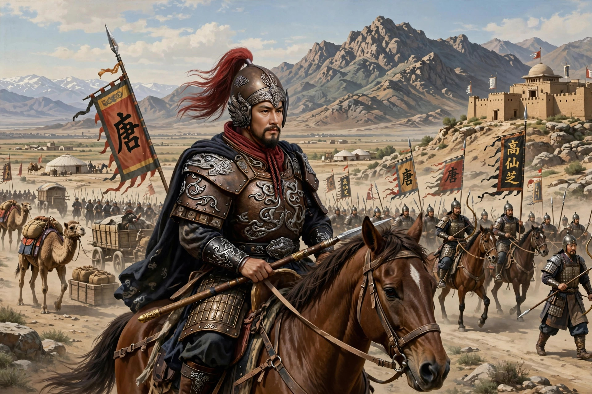

| Gao Xianzhi (died 756) | |
|---|---|
| Origin | Of Goguryeo descent |
| Allegiance | Tang dynasty |
| Known for | Battle of Talas (751) |

Gao Xianzhi (died 24 January 756) was a Tang dynasty general of Goguryeo (Korean) descent, renowned for campaigns that extended Tang influence deep into Central Asia and over the Pamir Mountains.
Serving in the Anxi Protectorate in the Tarim Basin, Gao led a daring expedition in 747 across the Pamirs against Lesser Bolü (in modern Gilgit), crossing high glaciated passes — an achievement compared by historians to Hannibal's crossing of the Alps. He became military governor (jiedushi) of Anxi.
In 751 Gao confronted Abbasid forces at the Battle of Talas in modern Kazakhstan/Kyrgyzstan. After several days of fighting, the defection of Karluk allies decided the battle for the Abbasids. Gao escaped with a remnant of his army. The defeat checked Tang expansion westward; Chinese tradition links captured papermakers from Talas to the spread of papermaking westward.
During the An Lushan Rebellion, Gao and Feng Changqing defended Tong Pass against the rebels. Slandered by the eunuch Bian Lingcheng, both were executed by Emperor Xuanzong in 756, to widespread protest from their soldiers.